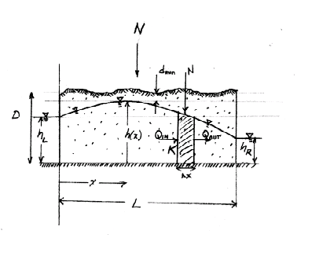
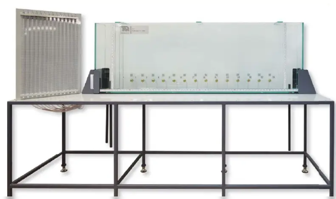
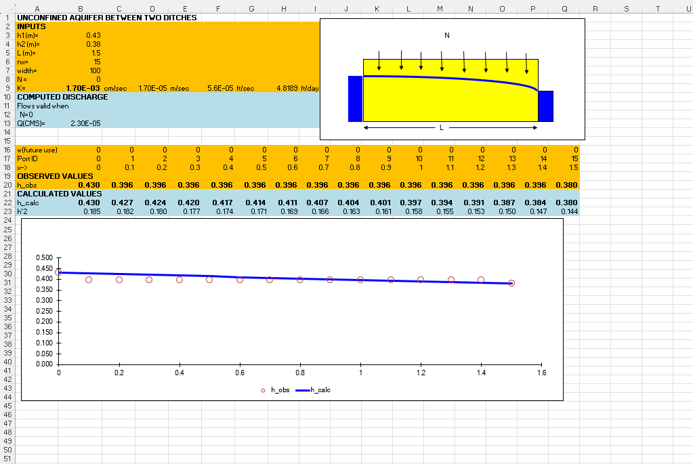
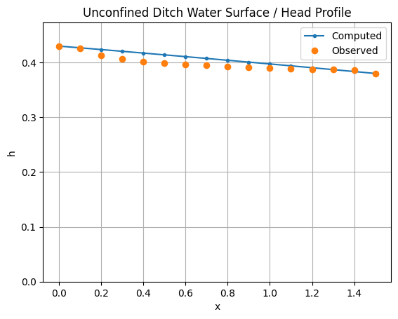

Porous Media: Head Distribution in an Unconfined Aquifer#
Course Website
Warning
Under development.
Readings#
Videos#
Laboratory Description#
This laboratory exercise introduces groundwater flow through a porous medium under unconfined conditions. The apparatus is a sand-filled tank with constant-head boundaries at each end and observation ports distributed along the flow direction. By imposing different upstream and downstream water levels, students will observe the shape of the water table and compare measured conditions to an analytical or spreadsheet-based prediction.
At the completion of this laboratory, students should be able to:
describe steady one-dimensional flow in an unconfined aquifer;
explain the meaning of hydraulic head, piezometric surface, and hydraulic conductivity in porous media;
measure head distribution along a laboratory sand tank using observation ports;
compare observed head values to a computed unconfined flow profile;
estimate the hydraulic conductivity, \(K\), of the porous medium by adjusting model inputs until computed and observed results agree reasonably well; and
relate measured discharge to the imposed head gradient and aquifer properties.
The purpose of the laboratory exercise is to connect groundwater-flow theory to direct observation. Students will use a controlled laboratory sandbox to observe the water-table profile that develops between two constant-head boundaries, then use a spreadsheet or script to compute the expected shape of the piezometric surface. Because the hydraulic conductivity of the sand is not given directly, students must calibrate the model by adjusting \(K\) until the predicted profile provides a good match to the measured data.
Theory#
Groundwater flow in porous media is commonly described using Darcy’s Law, which relates discharge to the hydraulic gradient and the properties of the medium:
where \(Q\) is discharge, \(K\) is hydraulic conductivity, \(A\) is the cross-sectional area perpendicular to flow, and \(\frac{dh}{dl}\) is the hydraulic gradient.

For an unconfined aquifer as depicted above, the saturated thickness varies along the flow direction, so the flow area is not constant. Under steady, one-dimensional conditions with horizontal flow and negligible vertical gradients (Dupuit assumptions), the governing relationship becomes:
where \(h(x)\) is the saturated thickness, which is equal to the local head \(h(x)\) when measured from an impermeable base. Note that the recharge term \(N\) in the figure above is zero in our case (hence it will not appear in our solution).
Combining these relationships and integrating between two constant-head boundaries, the result leads to the well-known result that the water table in an unconfined aquifer approximately follows a nonlinear (parabolic) profile:
where:
\(h_1\) and \(h_2\) are the heads at the upstream and downstream boundaries,
\(L\) is the length of the flow domain, and
\(x\) is the distance from the upstream boundary.
This result implies that the square of the head varies linearly with distance, even though the head itself does not. In this laboratory, students will compare this theoretical profile to measured heads and adjust the hydraulic conductivity, \(K\), in their computational tool to obtain agreement between observed and predicted behavior.
Laboratory Apparatus#
The apparatus (pictured below) is a transparent-sided tank mounted on a steel-framed bench with a worktop.

The sides are constructed of plate glass to allow visualization of flow and to resist abrasion from the permeable medium. The rear of the tank contains pressure tappings connected to a bank of piezometer tubes located along the side of the apparatus, allowing measurement of the head distribution along the tank.
Removable stainless-steel mesh baffles at each end of the tank retain the permeable medium (typically sand or glass beads for dye visualization). On either side of the baffles are end compartments with adjustable overflow pipes used to set and maintain water levels at each boundary of the model.
A recirculating pump system maintains water levels in the upgradient reservoir. A dye-injector system is also available to assist in visualizing flow paths.
Why this matters
This apparatus provides a physical representation of groundwater flow through a porous medium, allowing abstract concepts such as hydraulic head, gradients, and boundary conditions to be directly observed and measured.
By comparing measured head distributions and flow patterns to analytical or computational predictions, students can evaluate how well simplified models (e.g., Darcy-based solutions) represent real systems. This connection between theory, measurement, and model validation is central to engineering practice.
Experimental Procedure#
The apparatus consists of an aquarium-like sandbox filled with washed 20–40 sand. The top surface is open to the atmosphere, so the system behaves as an unconfined aquifer. Constant-head conditions are maintained at the inlet and outlet ends of the tank. Fourteen sampling ports, equally spaced along the long axis of the sandbox, are used to observe the head distribution. Flow exiting the downstream end is measured independently by a time-to-fill method.
A typical procedure is as follows:
Verify that the sandbox is level, the porous medium is saturated, and the recirculating flow system is operating properly.
Set the upstream and downstream constant-head boundaries to the desired elevations.
Allow the system to approach steady-state conditions before making measurements. (The system responds quite slowly to changes, so expect to wait quite awhile for new equilibrium conditions to be reached 15-20 minutes is not unusual)
Record the imposed boundary heads at the two ends of the sandbox.
Measure the hydraulic head at each of the 14 observation ports.
Measure outlet discharge using the time-to-fill method.
Enter the boundary heads, observation-port locations, and measured discharge into the provided spreadsheet or analysis script.
Compute the theoretical shape of the piezometric surface for unconfined flow.
Adjust the hydraulic conductivity, \(K\), within the spreadsheet or script until the computed profile gives a reasonable match to the observed head distribution.
Compare the calibrated profile to the measured data and comment on sources of mismatch, including measurement uncertainty, nonuniform packing, and departure from ideal assumptions.
Data Acquisition#
Students will collect the following measurements:
Upstream head, \(h_1\)
Downstream head, \(h_2\)
Distance between boundaries, \(L\)
Locations of observation ports along the sandbox
Hydraulic head at each observation port. \(h_{port} = z_{port} + \frac{p}{\gamma}_{port}\)
Discharge, \(Q\), measured using the time-to-fill method
All measurements should be recorded with consistent units (recommended: meters and seconds).
Data Organization#
Prepare and populate a table containing:
Port ID |
Distance, \(x\), (m) |
\(z_{port}\), (m) |
\(\frac{p}{\gamma}_{port}\), (m) |
\(h_{port}\), (m) |
Remarks |
|---|---|---|---|---|---|
0 |
0.00 |
N/A |
N/A |
0.450 |
Upstream Constant Head |
1 |
0.10 |
||||
2 |
0.20 |
||||
3 |
0.30 |
||||
4 |
0.40 |
||||
5 |
0.50 |
||||
6 |
0.60 |
||||
7 |
0.70 |
||||
8 |
0.80 |
||||
9 |
0.90 |
||||
10 |
1.00 |
||||
11 |
1.10 |
||||
12 |
1.20 |
||||
13 |
1.30 |
||||
14 |
1.40 |
||||
15 |
1.50 |
N/A |
N/A |
0.380 |
Downstream Constant Head |
Computed head, \(h_{calc}\) (from spreadsheet or script
Calculations#
Students will perform the following steps:
Compute discharge from time-to-fill measurements at the outlet:
\[ Q = \frac{V}{t} \]where \(V\) is the collected volume and \(t\) is the fill time.
Estimate hydraulic gradient using boundary heads:
\[ i = \frac{h_1 - h_2}{L} \]
Compute theoretical head distribution using the unconfined flow relationship (provided in the spreadsheet or script).
\[ h(x) = \sqrt{h_1^2 - \frac{(h_1^2 - h_2^2)}{L} \, x }\]Spreadsheet Implementation (the image is the link):

Python Implementation (script below):
"""
Direct Python conversion of the Excel worksheet: UN_DITCH.xlsx
Sheet: UN_DITCH
This script reproduces the worksheet calculations in a transparent form.
It keeps the same computational logic and cell relationships as the spreadsheet.
Original workbook logic notes:
- Flow equation is marked "Flows valid when N = 0"
- Recharge / source term array w is included for future use
- The profile is computed at nx+1 stations from x = 0 to x = L
"""
from math import sqrt
def compute_unconfined_ditch(
h1=0.43, # Excel B3
h2=0.38, # Excel B4
L=1.50, # Excel B5
nx=15, # Excel B6
width=100.0, # Excel B7
N=0.0, # Excel B8 (not directly used in formulas on the sheet)
K_cm_per_sec=0.0017, # Excel B9
w_values=None, # Excel B17:Q17
h_obs = [0.430, 0.426, 0.413, 0.407, 0.402, 0.399, 0.397, 0.395, 0.393, 0.391, 0.390, 0.389, 0.388, 0.387, 0.386, 0.380
]
):
"""
Reproduce the spreadsheet calculations and return a dictionary of results.
"""
# --- Unit conversions from row 9 ---
K_m_per_sec = K_cm_per_sec / 100.0 # Excel D9 = B9/100
K_ft_per_sec = (K_cm_per_sec / 2.54) * (1/12) # Excel F9 = (B9/2.54)*(1/12)
K_ft_per_day = K_ft_per_sec * 60 * 60 * 24 # Excel H9 = F9*60*60*24
# There are nx intervals and nx+1 stations
nstations = int(nx) + 1
# Default source/sink values, matching row 17
if w_values is None:
w_values = [0.0] * nstations
else:
if len(w_values) != nstations:
raise ValueError(f"w_values must have length nx+1 = {nstations}")
# --- Flow valid when N = 0 (Excel B13) ---
# Q(CMS)=((($F$9/(2*$B$5))*($B$3^2-$B$4^2)-B$17*(0.5*$B$5-B17))*$B$7
Q_cms = (((K_m_per_sec / (2 * L)) * (h1**2 - h2**2) - w_values[0] * (0.5 * L - w_values[0])) * width)
# --- Station coordinates (row 19) ---
dx = L / nx
x = [i * dx for i in range(nstations)]
# --- h^2 row (row 22) ---
h_squared = [0.0] * nstations
h_squared[0] = h1 ** 2 # Excel B22 = B20^2
h_squared[-1] = h2 ** 2 # Excel Q22 = Q20^2
# For interior stations, Excel uses:
# = $B$22 - ($B$22-$Q$22)*x/L + w*(L-x)*x/$H$9
for i in range(1, nstations - 1):
xi = x[i]
wi = w_values[i]
h_squared[i] = (
h_squared[0]
- (h_squared[0] - h_squared[-1]) * xi / L
+ wi * (L - xi) * xi / K_ft_per_day
)
# --- h row (row 20) ---
h = [0.0] * nstations
h[0] = h1
h[-1] = h2
for i in range(1, nstations - 1):
h[i] = sqrt(h_squared[i])
return {
"inputs": {
"h1_m": h1,
"h2_m": h2,
"L_m": L,
"nx": nx,
"width": width,
"N": N,
"K_cm_per_sec": K_cm_per_sec,
},
"conversions": {
"K_m_per_sec": K_m_per_sec,
"K_ft_per_sec": K_ft_per_sec,
"K_ft_per_day": K_ft_per_day,
"dx": dx,
},
"Q_cms": Q_cms,
"w": w_values,
"x": x,
"h": h,
"h_squared": h_squared,
"h_obs": h_obs,
}
def print_results(results):
print("Unconfined Ditch Results")
print("-" * 60)
print(f"Q (cms) = {results['Q_cms']:.12g}")
print(f"K (m/s) = {results['conversions']['K_m_per_sec']:.12g}")
print(f"K (ft/s) = {results['conversions']['K_ft_per_sec']:.12g}")
print(f"K (ft/day) = {results['conversions']['K_ft_per_day']:.12g}")
print(f"dx = {results['conversions']['dx']:.12g}")
print()
print(f"{'i':>3} {'x':>12} {'w':>12} {'h':>12} {'h^2':>12} {'h_obs':>12}")
for i, (xi, wi, hi, h2i, hobsi) in enumerate(zip(results["x"], results["w"], results["h"], results["h_squared"],results["h_obs"])):
print(f"{i:>3d} {xi:>12.6f} {wi:>12.6f} {hi:>12.6f} {h2i:>12.6f} {hobsi:>12.6f}")
if __name__ == "__main__":
results = compute_unconfined_ditch()
print_results(results)
# Optional plotting example:
#
import matplotlib.pyplot as plt
plt.figure()
# Model results
plt.plot(results["x"], results["h"], marker=".", label="Computed")
# Observations
plt.plot(results["x"], results["h_obs"], marker="o", linestyle="none", label="Observed")
plt.xlabel("x")
plt.ylabel("h")
plt.title("Unconfined Ditch Water Surface / Head Profile")
plt.ylim(0, max(results["h"]) * 1.1)
plt.grid(True)
plt.legend() # <-- important for distinguishing lines
plt.show()
Unconfined Ditch Results
------------------------------------------------------------
Q (cms) = 2.295e-05
K (m/s) = 1.7e-05
K (ft/s) = 5.57742782152e-05
K (ft/day) = 4.8188976378
dx = 0.1
i x w h h^2 h_obs
0 0.000000 0.000000 0.430000 0.184900 0.430000
1 0.100000 0.000000 0.426849 0.182200 0.426000
2 0.200000 0.000000 0.423674 0.179500 0.413000
3 0.300000 0.000000 0.420476 0.176800 0.407000
4 0.400000 0.000000 0.417253 0.174100 0.402000
5 0.500000 0.000000 0.414005 0.171400 0.399000
6 0.600000 0.000000 0.410731 0.168700 0.397000
7 0.700000 0.000000 0.407431 0.166000 0.395000
8 0.800000 0.000000 0.404104 0.163300 0.393000
9 0.900000 0.000000 0.400749 0.160600 0.391000
10 1.000000 0.000000 0.397366 0.157900 0.390000
11 1.100000 0.000000 0.393954 0.155200 0.389000
12 1.200000 0.000000 0.390512 0.152500 0.388000
13 1.300000 0.000000 0.387040 0.149800 0.387000
14 1.400000 0.000000 0.383536 0.147100 0.386000
15 1.500000 0.000000 0.380000 0.144400 0.380000

Calibrate hydraulic conductivity, \(K\):
Adjust \(K\) iteratively until the computed head profile aligns reasonably with observed data.
A visual match on a plot of \(h\) vs. \(x\) is typically sufficient for this exercise.
Plot results:
Plot measured head (\(h_{obs}\)) vs. distance (\(x\))
Overlay computed head (\(h_{calc}\)) on the same axes
Include labels, units, and a legend
The plots are shown above in the two example implementations - iterate through steps 4->5->6 until good agreement, or determine match is hopeless.
Interpretation#
Evaluate:
Agreement between observed and computed profiles
Sensitivity of results to the chosen value of \(K\)
Possible sources of discrepancy, such as:
nonuniform sand packing,
boundary condition instability,
measurement error in head or discharge,
limitations of the Dupuit assumptions
A brief discussion should accompany the results, focusing on whether the unconfined flow model provides a reasonable representation of the physical system.
Expected Student Deliverables#
Students should prepare a table of measured heads, a plot showing observed and computed head distributions on the same axes, the calibrated value of hydraulic conductivity, and a brief discussion of how well the model represents the experiment.
Deliverables#
Laboratory Report documenting the actual experiments, and other required content including comparison to computer model(s). The report should contain a table of measured heads, a plot showing observed and computed head distributions on the same axes, the calibrated value of hydraulic conductivity, and a brief discussion of how well the model represents the experiment.